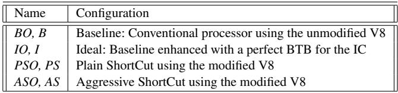
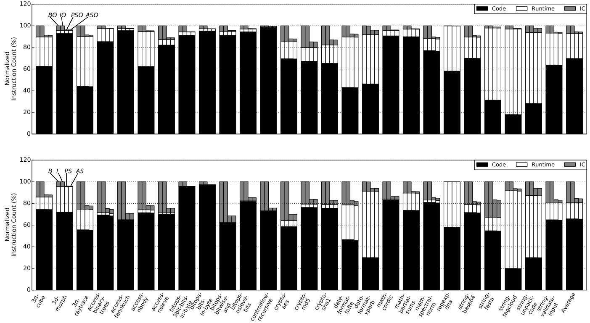

ShortCut: Architectural Support for Fast Object Access in Scripting Languages 论文解析¶
0. 论文基本信息¶
作者 (Authors): Jiho Choi, Thomas Shull, Maria J. Garzaran, et al.
发表期刊/会议 (Journal/Conference): ISCA
发表年份 (Publication Year): 2017
研究机构 (Affiliations): University of Illinois at Urbana-Champaign
1. 摘要¶
目的
- 解决动态脚本语言（如 JavaScript）中，因对象类型高度动态性导致的 Inline Caching (IC) 机制性能瓶颈问题。
- 具体而言，传统 IC 的 Dispatcher（分派器）执行包含大量条件分支和指令，造成高昂的 指令开销 和严重的 分支误预测 (branch misprediction)，从而拖慢程序执行。
方法
- 提出名为 ShortCut 的软硬件协同架构，通过硬件辅助直接跳过低效的 Dispatcher 代码。
- 设计了两个优化层级：
- Plain ShortCut: 将对 Dispatcher 的调用，直接转换为对正确 Handler（处理函数）的调用，完全绕过 Dispatcher 的执行。
- Aggressive ShortCut: 更进一步，对于简单的属性访问（仅涉及 load/store 操作），将调用指令直接转换为一条 load 或 store 指令，同时绕过 Dispatcher 和 Handler 的执行。
- 引入新的硬件结构 **ICTable **(Inline Cache Table)，用于存储
(访问点地址, 对象类型) -> (Handler地址/属性偏移)的映射关系。 - 扩展 ISA，新增
IC_Call、IC_Load、IC_Store、IC_Update和IC_Flush等指令，以支持硬件与 V8 JIT 编译器的交互。 - 在 Google V8 JIT 编译器和基于 Sniper 的模拟器中实现了完整的 ShortCut 方案。
结果
- 在 Octane 和 SunSpider 基准测试套件上评估，ShortCut 显著提升了性能：
- Plain ShortCut 在 V8 基线编译器下，平均 执行时间减少 30%；在最高优化级别下，仍能 减少 11%。
- Aggressive ShortCut 性能提升仅略优于 Plain ShortCut，主要受限于当前实现仅优化了部分简单 Load 场景。
- ShortCut 极大地降低了 IC 相关开销：
- 在基线编译器下，IC Dispatcher 的指令占比从平均 22% 大幅下降。
- 应用程序的平均 分支误预测率 (MPKI) 从 10.8 降至 6.9。
- 敏感性分析表明，即使 ICTable 规模很小（如 16 项），ShortCut 依然有效；512 项的表已能接近其性能上限。
- ShortCut 的硬件开销很小，一个 512 项的 ICTable 仅占用约 9 KB 存储空间。
 Figure 4: Breakdown of dynamic instruction count in Octane with (left) and without (right) the optimizing tier.
Figure 4: Breakdown of dynamic instruction count in Octane with (left) and without (right) the optimizing tier.
 Figure 6: Branch MPKI in Octane (left) and SunSpider (right) for B and PS.
Figure 6: Branch MPKI in Octane (left) and SunSpider (right) for B and PS.
 Figure 7: Normalized execution time of Octane with (left) and without (right) the optimizing tier.
Figure 7: Normalized execution time of Octane with (left) and without (right) the optimizing tier.
结论
- Inline Caching 是动态语言性能的关键瓶颈，传统的纯软件优化（如更好的分支预测器）效果有限。
- ShortCut 通过创新的软硬件协同设计，为解决此问题提供了高效方案，能显著降低指令数和分支误预测，从而大幅提升脚本语言的执行速度。
- 该架构具有良好的通用性，其核心思想可应用于其他动态语言（如 Python, Ruby）以及解释器（Interpreter）场景。
- 未来的工作方向是完善 Aggressive ShortCut 的实现，以覆盖更多类型的简单 Handler，从而释放其全部潜力。
2. 背景知识与核心贡献¶
研究背景与动机
- 动态脚本语言（如 JavaScript, Python, Ruby）因其灵活性和易用性而广受欢迎，但这种灵活性导致其性能低下。
- 性能瓶颈的核心在于对象访问（Object Access）。由于对象类型在运行时可变，编译器无法在编译期确定访问路径，必须生成包含一系列 if 语句的分派器（Dispatcher）代码。该代码通过比较对象类型并跳转到对应的处理器（Handler）来完成访问。
- 这种分派机制带来了巨大的开销：
- 指令开销：执行大量用于类型检查和跳转的指令。
- 分支预测失败（Branch Misprediction）：分派器中的条件分支难以预测，导致流水线频繁冲刷。论文分析指出，在 V8 引擎的基线编译器下，分派操作平均占应用程序总指令数的 22%，并将平均每千条指令的分支预测失败次数（MPKI）从 5.8 推高至 10.8。
- 现代引擎普遍采用内联缓存（Inline Caching, IC）技术来优化此过程，但即使是当前最先进的 V8 引擎所使用的共享分派器（Shared Dispatcher）设计，其性能开销依然显著。
核心贡献
- 提出了一种名为 ShortCut 的新型微架构（Microarchitecture）支持方案，旨在通过硬件辅助，从根本上绕过低效的软件分派过程。
- ShortCut 包含两个层级的优化设计：
- Plain ShortCut: 将对分派器的调用直接转换为对正确Handler的调用，从而完全绕过分派器的执行。
- Aggressive ShortCut: 更进一步，将对分派器的调用直接转换为一条简单的load或store指令，从而同时绕过分派器和Handler的执行。
- 为实现上述目标，引入了关键的硬件结构 ICTable（Inline Cache Table）：
- 该表由硬件维护，记录了访问点地址（Access Site）、对象类型（Object Type）与目标地址/偏移量（Handler Address/Offset）之间的映射关系。
- 在 Plain 设计中，ICTable 存储 Handler 地址；在 Aggressive 设计中，对于简单的属性访问，它直接存储内存偏移量。
- 定义了新的 ISA 扩展指令（如
IC_Call,IC_Load,IC_Store,IC_Update）以连接软件与硬件，使 JIT 编译器能够利用 ICTable。 - 在 Google V8 JIT 编译器和基于 Pin 的模拟器中实现了完整的 ShortCut 软硬件栈，并使用 Octane 和 SunSpider 基准测试套件进行评估。
- 评估结果表明，Plain ShortCut 效果显著：
- 在 V8 基线编译器下，平均执行时间减少 30%。
- 即使在最高级别的编译器优化下，仍能带来 11% 的平均性能提升。
- Aggressive ShortCut 由于当前实现仅覆盖部分简单场景，性能提升相对有限，但验证了更激进优化的可行性。
 Figure 2: Operations of a conventional IC (a), Plain ShortCut (b), and Aggressive ShortCut (c).
Figure 2: Operations of a conventional IC (a), Plain ShortCut (b), and Aggressive ShortCut (c).
3. 核心技术和实现细节¶
0. 技术架构概览¶
整体技术架构
本文提出的 ShortCut 是一种软硬件协同的架构，旨在通过硬件支持来加速动态脚本语言（如 JavaScript）中普遍存在的 Inline Caching (IC) 机制。其核心思想是利用一个专用的硬件表来记录访问点（access site）与对象类型到其对应处理程序（handler）的映射关系，从而在后续执行中绕过耗时的分派（dispatch）过程。
-
软件层面：
- 对 Google V8 JIT 编译器 进行修改，在对象属性访问点生成新的、能与硬件交互的指令，取代原有的对分派器（dispatcher）的调用。
- 修改运行时的 IC miss handler，使其在查找到正确的 handler 后，能通过新指令将映射信息填充到硬件表中。
-
硬件层面：
- 引入一个名为 Inline Cache Table (ICTable) 的新型硬件结构。该表是一个 set-associative 的缓存，用于存储
(访问点地址, 对象类型, 处理信息)的三元组。 - 扩展 ISA (Instruction Set Architecture)，增加一组新指令，使软件能够与 ICTable 交互。
- 利用现有的 BTB (Branch Target Buffer) 进行前端指令预取，并与 ICTable 协同工作以验证和纠正预测。
- 引入一个名为 Inline Cache Table (ICTable) 的新型硬件结构。该表是一个 set-associative 的缓存，用于存储
两种优化级别
ShortCut 架构定义了两个递进的优化级别：Plain ShortCut 和 Aggressive ShortCut。
-
Plain ShortCut:
- 目标是绕过整个 dispatcher 的执行。
- 在访问点使用新的 IC_Call 指令，该指令携带对象类型作为操作数。
- 硬件通过哈希
(PC, 对象类型)索引 ICTable。若命中，则直接跳转到对应的 handler 地址执行；若未命中，则回退到传统的 dispatcher 路径。 - Figure 2: Operations of a conventional IC (a), Plain ShortCut (b), and Aggressive ShortCut (c).
 Figure 3: Structures used in a conventional IC (a), Plain ShortCut (b), and Aggressive ShortCut (c).
Figure 3: Structures used in a conventional IC (a), Plain ShortCut (b), and Aggressive ShortCut (c).
-
Aggressive ShortCut:
- 在 Plain ShortCut 的基础上更进一步，目标是连 handler 的调用也一并绕过。
- 针对那些仅执行简单 load/store 操作的 handler（称为 simple handler），将 ICTable 中的 handler 地址字段替换为该属性在对象中的 offset，并增加一个 Simple 标志位。
- 在访问点分别使用 IC_Load 和 IC_Store 指令，它们额外携带对象基地址和数据寄存器。
- 当 ICTable 命中且 Simple 位被置位时，硬件直接在流水线中完成
ld [Rbase+offset]或st [Rbase+offset]操作，完全消除了控制流转移。
新增 ISA 指令
为支持上述架构，ShortCut 定义了五条新指令：
 Table 2: Instructions added by ShortCut.
Table 2: Instructions added by ShortCut.
- IC_Call / IC_Load / IC_Store: 用于替换访问点的原始调用，触发硬件加速逻辑。
- IC_Update: 由软件（dispatcher 或 miss handler）调用，用于向 ICTable 中填充新的
(访问点, 类型, 处理信息)条目。 - IC_Flush: 用于在 garbage collection 或 context switch 等事件后，清空整个 ICTable 以保证数据一致性。
协同工作机制
ShortCut 的执行流程依赖于 BTB 和 ICTable 的紧密协作：
- 指令获取阶段: BTB 根据 PC 预测一个目标地址（可能是 dispatcher、handler 或下一条指令），并开始预取。
- 执行阶段: 当对象类型可用时，硬件访问 ICTable 以获取“真实”的目标（handler 地址或 offset）。
- 验证与修正: 将 BTB 的预测与 ICTable 的结果进行比对。若不匹配，则 flush pipeline 并从正确的目标重新开始取指。
- 这种设计将预测（BTB）和验证（ICTable）分离，既利用了 BTB 的前端效率，又通过 ICTable 保证了准确性。
1. Inline Cache Table (ICTable)¶
Inline Cache Table (ICTable) 的核心设计与原理
- ICTable 是 ShortCut 架构提出的一种新型硬件表，其根本目的是通过硬件加速来绕过软件调度器（dispatcher）的执行开销。
- 它的核心思想是将原本在软件中动态维护的 Inline Cache (IC) Vector 信息（即访问点、对象类型到处理器的映射）缓存到一个专用的、低延迟的硬件结构中，从而实现近乎直接的跳转或内存访问。
Plain ShortCut 与 Aggressive ShortCut 中的 ICTable 结构
- 在 Plain ShortCut 设计中，每个 ICTable 条目包含三个关键字段：
- 访问点地址 (Access Site Address): 即
IC_Call指令本身的虚拟地址。 - 对象类型 (Object Type): V8 中对象类型的虚拟地址。
- 处理器地址 (Handler Address): 针对该访问点和对象类型的特定处理器代码入口地址。
- 访问点地址 (Access Site Address): 即
- 在 Aggressive ShortCut 设计中，ICTable 被升级以支持更激进的优化。其条目结构变为：
- 访问点地址 (Access Site Address)
- 对象类型 (Object Type)
- Simple 标志位: 一个 1-bit 字段，用于区分处理器是否为“简单处理器”。
- Handler/Offset 字段:
- 如果 Simple 位为 0，则此字段存储 处理器地址，行为与 Plain ShortCut 相同。
- 如果 Simple 位为 1，则此字段存储 属性偏移量 (offset)，表示该对象类型下目标属性相对于对象基址的固定偏移。
Figure 3: Structures used in a conventional IC (a), Plain ShortCut (b), and Aggressive ShortCut (c).
ICTable 的索引与查询算法流程
- 索引方式: ICTable 使用 访问点地址 和 对象类型 的哈希值作为联合索引（hashed together）。这种设计确保了不同访问点或同一访问点的不同类型都能被独立地缓存和查询。
- 查询触发时机: 查询发生在
IC_Call/IC_Load/IC_Store指令执行期间，当指令的操作数（特别是包含对象类型的寄存器）可用时。 - 查询流程:
- 硬件计算当前指令 PC（即访问点地址）和对象类型寄存器值的哈希。
- 使用该哈希值在 ICTable 中进行查找。
- 命中 (Hit):
- 对于 Plain ShortCut: 硬件直接获取 处理器地址，并将其作为新的目标地址。如果前端 BTB 的预测与此地址不符，则触发流水线冲刷，并从正确处理器开始取指。
- 对于 Aggressive ShortCut: 硬件检查 Simple 位。
- 若为 1，则直接使用 Handler/Offset 字段中的偏移量，结合指令提供的对象基址寄存器（
Rbase），在硬件内完成一次 load 或 store 操作，完全绕过软件处理器。 - 若为 0，则行为退化为 Plain ShortCut，跳转至处理器地址。
- 若为 1，则直接使用 Handler/Offset 字段中的偏移量，结合指令提供的对象基址寄存器（
- 未命中 (Miss): 硬件无法提供有效目标，控制流回退到传统的软件路径，即调用共享调度器。调度器会执行完整的 IC Vector 查找逻辑。
ICTable 的软件协同与更新机制
- 初始化与更新: ICTable 并非由硬件自主填充，而是由软件（V8 的调度器和 IC miss handler）在确定了正确的处理器（或偏移量）后，通过一条新的 ISA 指令
IC_Update来显式更新。IC_Update指令携带访问点地址、对象类型、处理器地址（或 Simple 位和偏移量）等参数，直接写入 ICTable。
- 一致性维护: 由于垃圾回收（GC）或上下文切换可能导致对象类型地址失效或进程隔离，ICTable 必须被刷新以保证数据一致性。这通过另一条新指令
IC_Flush实现，该指令会清空整个 ICTable。
ICTable 的参数设置与硬件开销
- 容量: 论文中评估使用的 ICTable 大小为 512 个条目。
- 关联度: 在敏感性分析中，固定为 4 路组相联。
- 面积开销: 每个条目在 Plain 设计中包含 3 个 48-bit 虚拟地址（约 18 字节），在 Aggressive 设计中再加 1 bit。因此，一个 512-entry 的 ICTable 总面积约为 9 KB，被认为是一个适度的硬件开销。
- 性能影响: 敏感性研究表明，即使 ICTable 小至 16 个条目，也能带来性能提升；而 1024 个条目 基本能达到性能饱和点，证明了 512-entry 设计的合理性。
| 配置 | ICTable 条目内容 | 支持的指令 | 优化级别 |
|---|---|---|---|
| Plain ShortCut | [Site Addr, Object Type, Handler Addr] | IC_Call |
绕过调度器，直接跳转至处理器 |
| Aggressive ShortCut | [Site Addr, Object Type, Simple, Handler/Offset] | IC_Load, IC_Store |
绕过调度器和简单处理器，直接执行 load/store |
ICTable 在整体架构中的作用
- 核心作用: ICTable 充当了一个硬件加速的预测与旁路引擎。它将原本需要数十条指令和多次难以预测的分支才能完成的“类型匹配-处理器查找”过程，压缩成一次硬件表查询。
- 与 BTB 的协同: ICTable 并不取代 BTB，而是与之协同工作。BTB 负责前端的快速但可能出错的预测，而 ICTable 则在后端提供精确的验证和修正。这种分离设计最小化了对现有处理器前端流水线的侵入。
- 最终效果: 通过 ICTable，ShortCut 架构成功地将动态脚本语言中最昂贵的操作之一——分派（Dispatch） 的开销大幅降低，从而显著提升了整体性能。
2. Plain ShortCut Design¶
Plain ShortCut 设计原理与实现
- Plain ShortCut 的核心目标是绕过调度器 (dispatcher) 的执行，通过硬件辅助直接跳转到正确的处理器 (handler)。
- 该设计通过引入一个新的硬件结构 ICTable (Inline Cache Table) 和一条新的 ISA 指令 IC_Call 来实现。
- 其基本思想是：在指令执行时，利用对象的类型 (type) 信息和访问站点地址 (access site address) 作为索引，直接从 ICTable 中查询出对应的处理器地址，从而避免执行包含多个 if-else 分支的调度器代码。
关键组件与数据结构
- ICTable 是一个组相联 (set-associative) 的硬件表，用于缓存访问站点、对象类型和处理器地址之间的映射关系。
- 每个 ICTable 表项包含三个虚拟地址 (VA)：
- 访问站点地址 (Access Site Address): 即
IC_Call指令本身的程序计数器 (PC) 值。 - 对象类型地址 (Object Type Address): V8 将对象类型表示为内存地址。
- 处理器地址 (Handler Address): 用于处理该特定类型对象属性访问的代码地址。
- 访问站点地址 (Access Site Address): 即
- 每个 ICTable 表项包含三个虚拟地址 (VA)：
- IC_Call 指令 替代了原有的调用调度器的
call指令。- 它接收两个主要操作数：
- 调度器的相对地址（用于回退）。
- 一个寄存器
RType，其中包含当前被访问对象的类型。
- 它接收两个主要操作数：
算法流程与执行逻辑
- 指令获取阶段 (Fetch Stage):
- 处理器的分支目标缓冲区 (BTB) 被正常访问。BTB 可能会预测跳转到调度器、某个处理器，或者发生 BTB miss。
- 流水线根据 BTB 的预测开始预取后续指令。
- ICTable 查询阶段:
- 当
IC_Call指令执行到能够确定RType寄存器值的流水线阶段时，硬件会将访问站点地址 (PC) 和RType进行哈希，以索引 ICTable。 - ICTable 命中 (Hit):
- ICTable 返回存储的处理器地址。
- 硬件将此地址与 BTB 的预测进行比较。
- 如果 BTB 预测正确（即预测了该处理器地址），则流水线继续执行，完全绕过了调度器。
- 如果 BTB 预测错误，则冲刷流水线 (flush the pipeline)，并从 ICTable 提供的正确处理器地址重新开始取指。
- ICTable 未命中 (Miss):
- 硬件无法直接找到处理器地址，因此必须执行传统的调度器路径。
- 流水线会冲刷（除非 BTB 正确地预测了调度器地址），并跳转到调度器地址。
- 调度器执行其常规逻辑，在软件的 IC Vector 中查找匹配的类型，并最终调用正确的处理器。
- 在处理器执行完毕后，软件会通过一条特殊的
IC_Update指令，将这次成功的（访问站点, 类型, 处理器）三元组写入 ICTable，以便未来重用。
- 当
Figure 3: Structures used in a conventional IC (a), Plain ShortCut (b), and Aggressive ShortCut (c).
与 BTB 的协同工作
- BTB 和 ICTable 扮演不同的角色：BTB 是一个预测器 (predictor)，而 ICTable 是一个权威的查找表 (authoritative lookup table)。
- BTB 的作用是提供快速但可能不准确的预测，以驱动指令预取。
- ICTable 的作用是在稍后的流水线阶段提供确定性的、正确的目标地址，并验证或纠正 BTB 的预测。
- 两者可以独立失效（evict）。例如，一个有用的 ICTable 表项被替换掉后，即使 BTB 仍然持有正确的处理器地址，下一次访问也会因为 ICTable miss 而导致流水线冲刷并回退到调度器。
软件集成与维护
- 编译器修改: Google V8 JIT 编译器被修改，将所有使用共享调度器的访问站点中的
call dispatcher指令替换为IC_Call指令。同时，读取对象类型的指令被提前到IC_Call之前。 - 表项更新: 调度器和 IC miss handler 被修改，在成功找到处理器后，会执行
IC_Update指令来填充 ICTable。 - 表项失效: 在垃圾回收 (garbage collection) 或上下文切换 (context switches) 后，对象的内存布局或类型信息可能发生变化，导致 ICTable 中的数据过期。此时，运行时系统会执行
IC_Flush指令来清空整个 ICTable，确保数据一致性。
性能影响与参数设置
- ICTable 大小: 论文中使用的 ICTable 大小为 512 个表项。敏感性分析（图9）表明，即使只有 16 个表项，Plain ShortCut 也能带来性能提升，而 1024 个表项 已接近性能饱和点。
- 硬件开销: 一个 512 表项的 ICTable（每个表项包含3个48位虚拟地址）大约占用 9 KB 的存储空间，被认为是一个适度的开销。
- 性能收益: 在 V8 基线编译器下，Plain ShortCut 平均减少了 21%-26% 的动态指令数，并将分支误预测率 (MPKI) 从约 14.4 显著降低到 8.5（Octane 套件），最终带来 26%-37% 的平均执行时间加速。
 Table 1: Interaction between the BTB and the ICTable.
Table 1: Interaction between the BTB and the ICTable.
3. Aggressive ShortCut Design¶
Aggressive ShortCut 设计原理与实现
- Aggressive ShortCut 的核心思想是识别并优化那些执行逻辑极为简单的 handler。这些简单 handler 通常只执行一条 load 或 store 指令（例如
ld Rdst,[Rbase+offset]），用于直接访问对象属性，而不涉及复杂的语言语义操作（如遍历原型链）。 - 为了实现这一目标，该设计对硬件和软件栈进行了协同修改，旨在将原本需要调用 dispatcher 和 handler 的间接内存访问，转化为一条可以在硬件中直接完成的原子操作。
硬件结构增强：ICTable 升级
- 原始的 Plain ShortCut 中的 ICTable 条目包含三个字段：IC_Call 指令地址、对象类型 (Type) 和 处理器地址 (Handler)。
- Aggressive ShortCut 对 ICTable 进行了扩展，引入了一个新的 Simple 标志位，并将原有的 Handler 字段重命名为 Handler/Offset。
- 当 Simple 位为 1 时，Handler/Offset 字段不再存储处理器地址，而是存储该属性在对象结构中的固定偏移量 (offset)。
- 当 Simple 位为 0 时，Handler/Offset 字段的行为与 Plain ShortCut 相同，即存储处理器地址。
- Figure 3: Structures used in a conventional IC (a), Plain ShortCut (b), and Aggressive ShortCut (c).
新指令集：IC_Load 与 IC_Store
- 在软件层面，V8 编译器会将原先调用 dispatcher 的指令替换为两条新的 ISA 指令：
- IC_Load: 用于读取属性的访问点。
- IC_Store: 用于写入属性的访问点。
- 这两条指令的输入操作数包括：
- AddrD: dispatcher 的相对地址（用于回退路径）。
- RType: 存储当前对象类型的寄存器。
- Rbase: 存储对象基地址的隐式寄存器。
- Rdst/Rsrc: 用于接收或提供数据的隐式寄存器。
- 执行流程如下：
- 指令执行时，硬件使用 PC（即指令自身地址）和 RType 的哈希值索引 ICTable。
- 如果发生 ICTable hit:
- 硬件检查 Simple 位。
- 若 Simple == 1，则从 Handler/Offset 字段读取 offset，并立即在硬件中执行
ld Rdst, [Rbase + offset]或st Rsrc, [Rbase + offset]操作。此过程完全绕过了 dispatcher 和 handler 的执行，也无需任何控制流跳转。 - 若 Simple == 0，则行为退化为 Plain ShortCut，即跳转到 Handler/Offset 字段指定的处理器地址。
- 如果发生 ICTable miss，则执行流程回退到传统的共享 dispatcher 路径。
软件栈协同：编译器与运行时修改
- V8 的 IC miss handler 被修改，以便在生成一个新的 handler 时，能够判断其是否为简单 handler。
- 如果是简单 handler，miss handler 在向软件侧的 IC Vector 添加条目时，会额外记录 Simple 标志和 offset。
- 随后，它会调用新的 IC_Update 指令，将这些信息（包括 Simple 位和 offset）写入硬件 ICTable。
- IC_Update 指令在 Aggressive 模式下的行为：
- 它接收 Simple 位和 Handler/Offset 值作为输入。
- 在更新 ICTable 的同时，它还会更新 BTB。对于简单 handler，BTB 的目标地址被设置为 RPC + 4（即下一条指令的地址），因为此时已无控制流变化。
整体作用与局限性
- 作用: Aggressive ShortCut 通过将最常见的、最简单的内存访问模式下沉到硬件指令级别，消除了函数调用和返回的开销，以及相关的分支预测压力，从而在理想情况下实现了接近静态语言的访问性能。
- 局限性: 其实际收益受限于简单 handler 在所有 handler 调用中的占比。根据论文第6节的评估，虽然 75.7% 的 handler 调用是加载操作，但其中只有 15.1% 是简单加载。此外，论文实现中 IC_Store 尚未支持，这进一步限制了其性能提升幅度，导致其相比 Plain ShortCut 只有微小的改进。
4. ISA Extensions for ShortCut¶
ShortCut ISA扩展指令集详解
为实现对Inline Cache (IC) 操作的硬件加速，ShortCut架构在ISA层面引入了五条新指令。这些指令共同构成了软件与硬件表（ICTable）之间的桥梁，负责查询、更新和管理硬件缓存状态。
- 核心查询指令：
IC_Call,IC_Load,IC_Store- 这三条指令用于替换传统编译器在访问点（access site）生成的对分发器（dispatcher）的调用。
- 它们共享一个关键输入：对象类型（object type），该类型被作为显式寄存器操作数传入。
IC_Call是基础形式，适用于所有场景。当它执行时：- 硬件使用 (PC, RType) 作为键索引ICTable。
- 若命中，控制流直接跳转到ICTable中存储的处理器地址（handler address）。
- 若未命中，则回退到传统的分发器地址进行处理。
IC_Load和IC_Store是IC_Call的增强版，专为读/写访问点设计，并引入了对简单处理器（simple handler） 的优化。- 除了对象类型外，它们还隐式地使用两个寄存器：Rbase（对象基地址）和 Rdst/Rsrc（数据目标/源寄存器）。
- 当ICTable命中且对应条目的 Simple 位被置位时，硬件不再进行跳转，而是直接在流水线中执行一次内存加载（
ld Rdst,[Rbase+offset]）或存储（st Rsrc,[Rbase+offset]）操作，其中offset来自ICTable。 - 这一机制完全绕过了处理器代码的执行，将动态语言的属性访问开销降至与静态语言相当的水平。
Table 2: Instructions added by ShortCut.
- 硬件表管理指令：
IC_Update,IC_FlushIC_Update指令由软件（V8的分发器或IC miss handler）在确定了正确的处理器后调用，用于向ICTable中填充新条目。- 在 Plain ShortCut 模式下，它接收三个操作数：访问点地址（RPC）、对象类型（RType）和处理器地址（Rhandler）。
- 在 Aggressive ShortCut 模式下，它接收四个操作数：前三个同上，外加一个值寄存器（Rvalue），该寄存器根据 Simple 位的值，要么存放处理器地址，要么存放属性偏移量（offset）。
- 此外，
IC_Update还会同步更新 BTB，以确保后续的预测能指向正确的处理器或下一条指令（对于简单处理器）。
IC_Flush是一条无操作数的指令，用于使整个ICTable失效。- 它在特定事件发生时由运行时或操作系统调用，例如 垃圾回收（garbage collection） 或 上下文切换（context switches），以防止硬件表中存储过时或无效的地址信息。
指令在系统中的作用与交互流程
-
正常执行路径：
- 编译器生成
IC_Load/IC_Store/IC_Call指令。 - 指令执行时查询ICTable。
- 若命中且为简单处理器（仅限Load/Store），则直接完成内存操作，无任何控制流转移。
- 若命中但非简单处理器，则直接跳转至处理器，绕过分发器。
- BTB在此过程中提供初始预测，而ICTable查询结果用于验证或纠正该预测。
- 编译器生成
-
未命中处理路径：
- ICTable查询未命中。
- 控制流被重定向至传统的共享分发器。
- 分发器通过软件IC Vector查找正确的处理器。
- 找到后，分发器调用
IC_Update指令，将（访问点，类型，处理器/偏移）三元组回填（back-populate） 到ICTable中，为下次访问做准备。
-
状态维护路径：
- 当系统发生可能使ICTable内容失效的事件（如GC）时，运行时插入
IC_Flush指令。 IC_Flush清空ICTable，强制后续所有IC操作都走未命中路径，直到表被重新填充。
- 当系统发生可能使ICTable内容失效的事件（如GC）时，运行时插入
这种设计将原本由大量分支和内存访问构成的软件分发逻辑，转化为一次高效的硬件表查询，甚至在最佳情况下完全消除控制流开销，从而显著提升了动态脚本语言中对象访问的性能。
5. Integration with Shared Dispatcher¶
实现原理与编译器集成
- ShortCut 的核心在于为 共享调度器 (Shared Dispatcher) 设计硬件加速。V8 的共享调度器将所有读/写访问点的分派逻辑集中到一个通用函数中，通过查询一个名为 IC Vector 的数据结构来匹配对象类型并跳转到对应的 handler。
- 为了利用 ShortCut，必须对 V8 JIT 编译器进行修改，使其在生成代码时不再发出普通的
call dispatcher指令，而是发出 ShortCut 的新指令。 - 在 Plain ShortCut 设计中，编译器在每个访问点（access site）插入一条 IC_Call 指令。该指令需要两个关键操作数：
- 调度器的地址（用于回退路径）。
- 一个包含当前对象 类型 (type) 的寄存器。这意味着原本在调度器内部执行的“读取对象类型”操作被提前到了访问点之前。
- 在 Aggressive ShortCut 设计中，编译器进一步区分读写操作，分别使用 IC_Load 和 IC_Store 指令。这些指令除了上述操作数外，还隐式地使用了 V8 原本就已设置好的寄存器：
- Rbase: 包含对象的基地址。
- Rdst/Rsrc: 用于存放加载的数据或提供要存储的数据。
算法流程与运行时协作
- 正常执行路径:
- 当 IC_Call/Load/Store 指令执行时，硬件会使用 (PC, RType) 作为键去查询 ICTable。
- 如果 ICTable hit:
- 对于 Plain ShortCut 或非简单 handler，硬件直接跳转到 ICTable 中存储的 handler 地址，完全绕过了共享调度器的执行。
- 对于 Aggressive ShortCut 且 handler 是简单的（即只执行一次 load/store），硬件直接利用 ICTable 中存储的 offset 字段，执行
ld Rdst, [Rbase+offset]或st Rsrc, [Rbase+offset]，从而连 handler 的调用也一并省略。
- 如果 ICTable miss:
- 控制流会回退到传统的路径，即调用共享调度器。调度器会像往常一样遍历 IC Vector 来查找匹配的类型和 handler。
- 表项填充路径 (关键协作点):
- 无论是调度器在 IC Vector 中找到了匹配项，还是 IC miss handler 在运行时创建了一个新项，它们都需要更新 ICTable。
- 为此，V8 的调度器和 IC miss handler 被修改为在确定了正确的 (type, handler/offset) 映射后，立即执行一条新的 IC_Update 指令。
- IC_Update 指令接收访问点地址、对象类型、以及 handler 地址（或 offset 和一个 Simple 标志位），并将这些信息写入 ICTable 的对应位置，为下一次相同情况的访问做好准备。
- 状态维护:
- 在发生 垃圾回收 (garbage collection) 或 上下文切换 (context switches) 时，对象的内存布局或类型信息可能失效。为防止 ICTable 使用过期数据，系统会执行 IC_Flush 指令来清空整个表。
参数设置与硬件结构
- ICTable 是一个 512-entry、4-way set associative 的硬件表。
- 每个 Plain ShortCut 表项包含三个 48-bit 虚拟地址 (VA):
- 访问点的地址 (IC_Call 指令的 PC)。
- 对象类型的地址。
- 对应 handler 的地址。
- Aggressive ShortCut 的表项在此基础上增加了一个 1-bit Simple 标志，并将 handler 地址字段复用为 Handler/Offset 字段。当 Simple=1 时，该字段存储的是属性偏移量。
- 索引方式: 使用访问点地址 (PC) 和对象类型 (RType) 的哈希值共同索引 ICTable，这使得同一个访问点可以缓存多个不同类型的映射。
Figure 3: Structures used in a conventional IC (a), Plain ShortCut (b), and Aggressive ShortCut (c).
输入输出关系及整体作用
- 输入:
- 编译器输入: JavaScript 源码中的属性访问表达式（如
obj.x）。 - 硬件指令输入: IC_Call/Load/Store 指令接收对象类型、对象基地址、目标/源寄存器等。
- 编译器输入: JavaScript 源码中的属性访问表达式（如
- 输出:
- 编译器输出: 不再是调用共享调度器的代码，而是包含新 ShortCut 指令的机器码。
- 硬件输出: 要么是直接完成的 load/store 操作结果，要么是跳转到正确 handler 的控制流，极大地减少了指令发射和分支预测失误。
- 在整体中的作用:
- 消除冗余计算: 绕过了共享调度器中循环遍历 IC Vector 的开销，这部分在基准测试中占用了高达 26% 的指令数。
- 改善分支预测: 将一个难以预测的、多目标的间接跳转（来自共享调度器），替换为一个由 ICTable 辅助的、高准确率（98%）的预测，显著降低了 MPKI（从 10.8 降至 6.9）。
- 无缝集成: 通过 IC_Update 和 IC_Flush 指令，将硬件加速与 V8 现有的软件 Inline Caching 机制紧密结合，确保了功能的正确性和鲁棒性，同时获得了巨大的性能提升（Plain ShortCut 平均加速 30%）。
4. 实验方法与实验结果¶
实验设置
- 软件栈: 实验基于 Google V8 JavaScript JIT compiler (版本 5.1)。V8 采用双层编译架构：所有代码先由 baseline compiler 编译，热点代码再由 optimizing tier (Crankshaft) 重新编译。
- 硬件模拟: 使用 Sniper simulator (一个 Pin-based 架构模拟器) 来建模和评估 ShortCut 硬件。关键处理器参数如下表所示。
 Table 3: Processor architecture. RR means round robin.
Table 3: Processor architecture. RR means round robin.
- 评估配置: 实验对比了四组软硬件配置，以隔离 ShortCut 的效果，并与理想化的分支预测进行比较。
- Baseline (B/BO): 未修改的 V8 编译器 + 常规处理器。
- Ideal (I/IO): 未修改的 V8 + perfect BTB（能完美预测 IC 分支目标），作为现有间接分支预测优化方案的理论上限。
- Plain ShortCut (PS/PSO): 修改后的 V8 + Plain ShortCut 硬件。
- Aggressive ShortCut (AS/ASO): 修改后的 V8 + Aggressive ShortCut 硬件。
- 后缀
O表示启用了 V8 的 optimizing tier，无后缀则表示仅使用 baseline compiler。
- 基准测试套件: 使用 Octane 2.0 和 SunSpider 1.0.2 两个业界标准的 JavaScript 性能测试套件。
- ICTable 配置: 模拟的 ICTable 大小为 512 entries，采用 4 路组相联。
- 其他细节: 为获得确定性结果，实验中关闭了垃圾回收 (GC)。通过每 15 毫秒插入一次
IC_Flush指令来模拟上下文切换和 GC 对 ICTable 的影响。
 Table 4: Architecture and compiler configurations evaluated.
结果数据分析
-
IC 开销分析:
- 在仅使用 baseline compiler 时 (B)，IC dispatcher 的指令开销巨大，分别占 Octane 和 SunSpider 总动态指令数的 26% 和 19%。
- 共享分发器中的间接跳转 (
jmp Entry.Handler) 极难预测，BTB 平均准确率仅为 42%-52%，导致应用级 MPKI (Mispredictions Per Kilo Instruction) 从约 6 显著增加到 14.4 (Octane) 和 8.8 (SunSpider)。
-
性能提升:
- Plain ShortCut (PS) 在关闭优化器时效果最为显著，将平均执行时间减少了 37% (Octane) 和 26% (SunSpider)。
- 即使在开启最高级别优化 (PSO) 的情况下，Plain ShortCut 依然能带来 13% (Octane) 和 10% (SunSpider) 的平均性能提升。
- Aggressive ShortCut (AS/ASO) 相比 Plain ShortCut 提升非常有限，因为其实验实现仅支持
IC_Load，且只覆盖了 15.1% 的 load handler 调用。
-
指令数与分支预测:
- PS 将动态指令总数平均减少了 21% (Octane) 和 15% (SunSpider)（关闭优化器时），主要源于避免了 dispatcher 的执行。
- PS 将平均 branch MPKI 从 14.4/8.8 降低到 8.5/6.0，大幅减少了由 dispatcher 引起的分支误预测。
- 新引入的
IC_Call指令本身预测准确率高达 98%，其带来的少量额外开销远小于所消除的 dispatcher 开销。
Figure 4: Breakdown of dynamic instruction count in Octane with (left) and without (right) the optimizing tier.
 Figure 5: Breakdown of dynamic instruction count in SunSpider with (top) and without (bottom) the optimizing tier.
Figure 6: Branch MPKI in Octane (left) and SunSpider (right) for B and PS.
Figure 7: Normalized execution time of Octane with (left) and without (right) the optimizing tier.
 Figure 8: Normalized execution time of SunSpider with (top) and without (bottom) the optimizing tier.
Figure 8: Normalized execution time of SunSpider with (top) and without (bottom) the optimizing tier.
消融实验 (Ablation Study)
- ICTable 大小敏感性分析: 实验通过改变 ICTable 的大小来评估其对性能的影响。
- 即使 ICTable 只有 16 entries，Plain ShortCut 依然能超越 Baseline，这对于资源受限的嵌入式设备具有重要意义。
- 性能在 1024 entries 时接近饱和，表明 512 entries 的设计在性能和硬件开销（约 9 KB）之间取得了良好平衡。
 Figure 9: Sensitivity of the execution time of PS to varying ICTable size. The execution time is normalized to B.
Figure 9: Sensitivity of the execution time of PS to varying ICTable size. The execution time is normalized to B.
- Plain vs. Aggressive: 这本身就是一项关键的消融实验。结果表明，Plain ShortCut 已经捕获了绝大部分性能收益，而 Aggressive ShortCut 的额外收益微乎其微。这揭示了当前实现的瓶颈在于 Aggressive ShortCut 的软件支持不完整（仅支持 load，不支持 store），而非硬件设计本身无效。
- ShortCut vs. Ideal BTB: PS/PSO 的性能显著优于 I/IO。这证明了仅仅改进分支预测（Ideal BTB）无法解决根本问题，而 ShortCut 通过完全绕过 dispatcher 代码的架构级优化，能带来更深层次的性能提升。